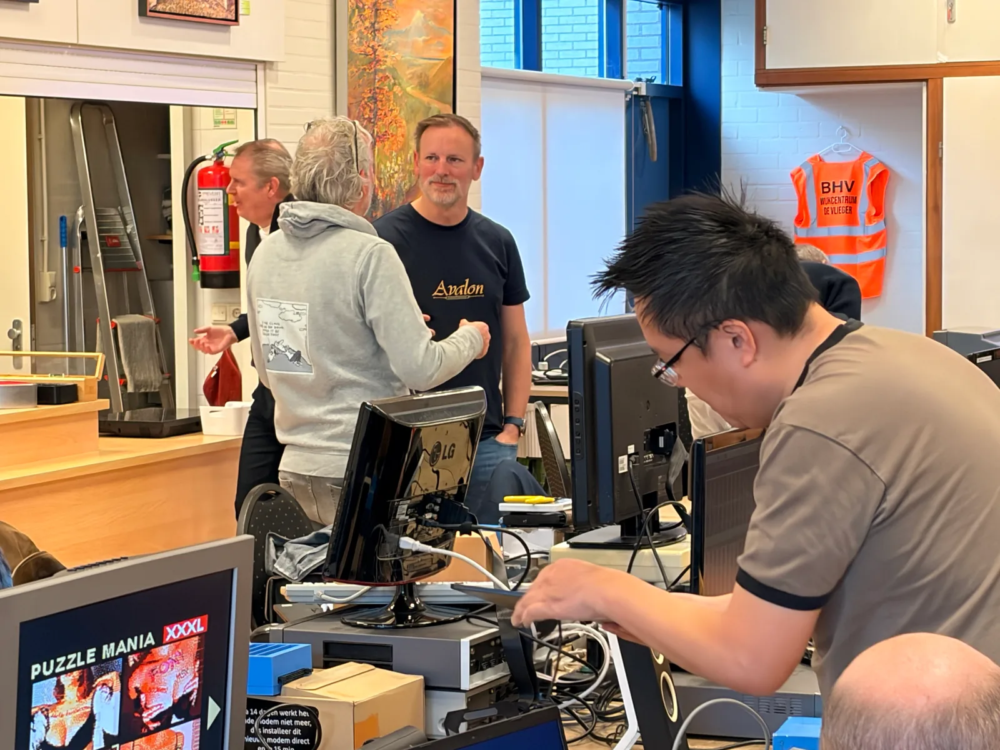
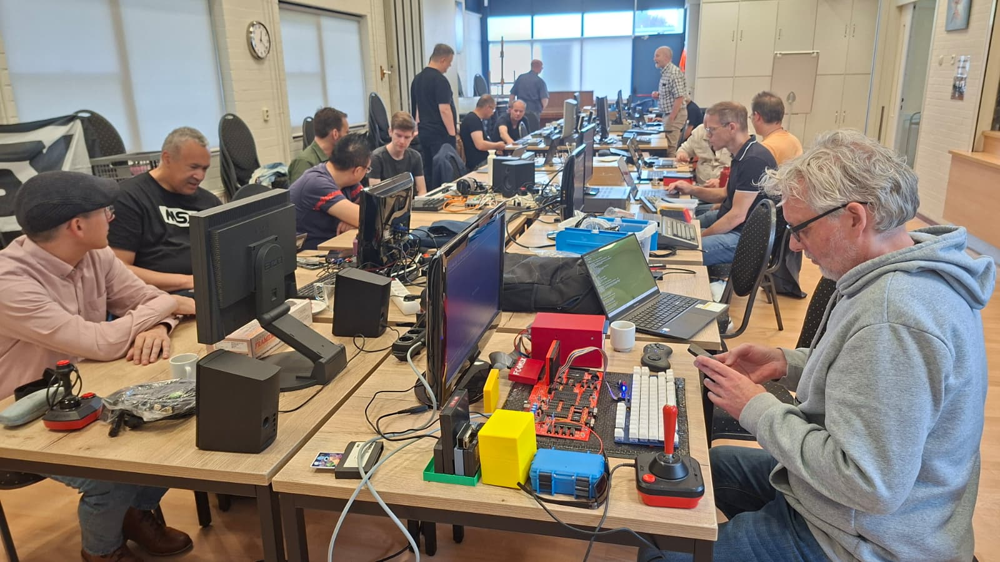

Neem je setup mee
Wil je een computer opstellen? Vraag vooraf een tafelplek aan via het formulier. De ruimte is beperkt. Neem je stroomkabels en eventueel een stekkerdoos mee.
MSX-gebruikersgroep
Twee keer per jaar schuiven we onze computers bij elkaar. Kom langs, ontmoet andere MSX-liefhebbers en ontdek wat er op de 8-bitcomputer wordt gemaakt.

De bijeenkomst
We komen samen om bij te praten, elkaars computers te bekijken en projecten uit te proberen. Je bent ook welkom zonder eigen computer.
Wil je een computer opstellen? Vraag vooraf een tafelplek aan via het formulier. De ruimte is beperkt. Neem je stroomkabels en eventueel een stekkerdoos mee.
Laat een game, hardwareproject of experiment zien. Meld je bijdrage vooraf aan en vertel kort wat je wilt delen. Elke spreker krijgt maximaal 15 minuten.
Koffie en thee zijn te koop tegen vriendelijke prijzen. Gratis parkeren kan in de buurt. Iets lekkers meenemen om te delen wordt gewaardeerd.
De locatie en tijden voor januari volgen.
Eerdere bijeenkomsten

Avalon op MSX2, YouTube in SCREEN 7, de MSX Pico MAX en een zelfgebouwde Z380-computer.

Een tool voor PSG-muziek, Z80-debugging in VS Code en nieuwe mogelijkheden voor de MSX Pico+.

De aftrap in de Dutch Innovation Factory, met het verhaal achter FAC Soundtracker en een nieuw digitaal tijdschriftenarchief.
Zaterdag 30 januari 2027
Meld je aan voor de bijeenkomst, vraag een tafelplek aan of stel een bijdrage voor. Wil je alleen bericht krijgen over volgende edities? Dat kan ook.
We gebruiken je aanmelding om je bezoek en eventuele bijdrage te regelen. We sturen je nieuws over volgende bijeenkomsten als je die keuze maakt en bevestigt. Afmelden voor updates kan via msxzoetermeer@gmail.com.
Organisatie

Ontwerpt MSX-hardware, waaronder de MSX Pico-cartridge en interfaces waarmee je een USB-toetsenbord op een MSX kunt aansluiten.
MSX-projecten
Leerde programmeren en muziek maken op de MSX. Hij verzamelt MSX-computers en presenteerde in oktober 2026 de MSX2-versie van zijn RPG Avalon.
MSX-collectieMedeorganisator van MSX Zoetermeer. Vanuit zijn bedrijf Bovenwijs werkt Steven in IT en informatiebeheer.
Profiel